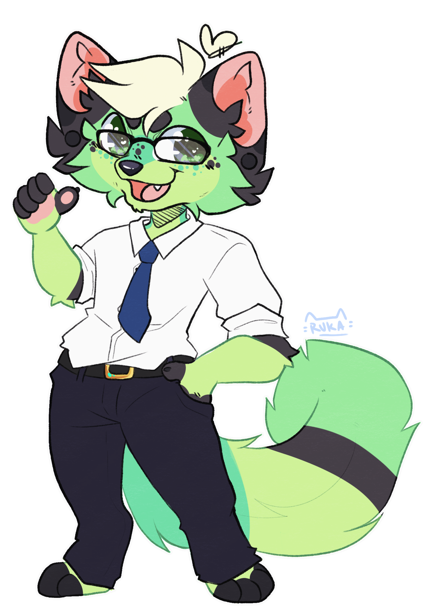

About Me

Hello!
I'm Corgi Taco
Hi I'm Corgi Taco. I am a developer at Potion Studios specializing in complex world generation for Oh The Biomes We've Gone. Formerly, I was the lead developer for Oh The Biomes You'll Go bringing it to 1.14+. Beyond my work here at Potion Studios, I have my own series of mods I work on including Enhanced Celestials and Block Swap, as well as having created Minecraft mods for content creators including MrBeast, SocksFor1, RyGuyRocky, and more. When I am not making Minecraft mods, I am working towards my Electrical Engineering degree at a community college and delivering mail for the United States Postal Service in a rural community.